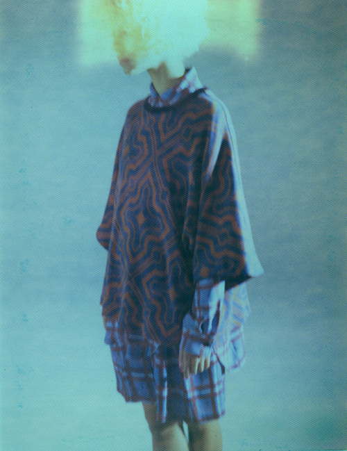

ネオンサインについて
ネオンサイン(NEON SIGN)は日本のファッションブランド。ブランドコンセプトは”THE PURSUE OF CLOTH ARTS.”「布芸の追求」。デザイナーの林飛鳥は1985年4月11日生まれ。文化服装学院卒業後、某ブランドデザインチームにて企画を担当。その後、2009年にネオンサインを立ち上げる。当初はメンズ、ユニセックスで展開していた。2017年秋冬シーズンより、メンズ、ウィメンズ、ユニセックスの3つのラインで展開。
ブランドのはじまり
2009年秋冬コレクションより「ネオンサイン」スタート。
